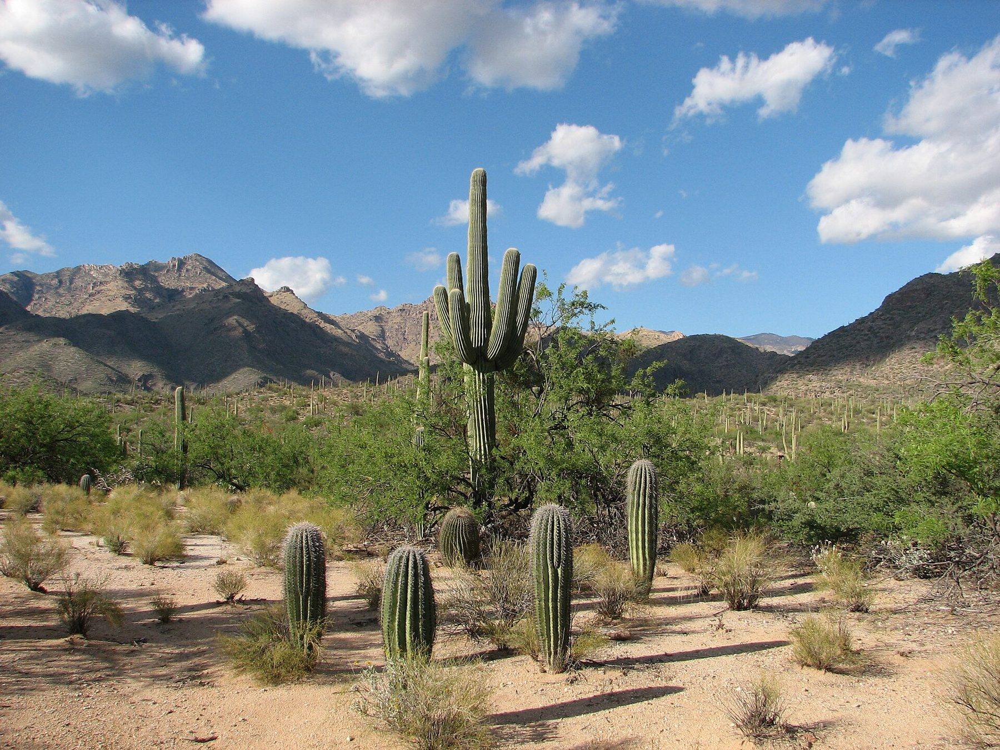

OffsetMap
offsetmap.com

Environmental scientist in Tucson. I read land, carbon and climate data and build the maps and web tools that make it usable.
Environmental Scientist Founder, OffsetMap
32.2226° N, 110.9747° W
Tucson — Worldwide · Available for select projects
I combine environmental science and agricultural expertise with front-end development, data visualization and practical AI.
4
Platforms built and shipped
2023
OffsetMap founded
2025
NomadSwipe in development
32.2°N
Tucson, in the Sonoran Desert

offsetmap.com
salsav.org

avsinfronteras.org/archive

nomadswipe.com

I move between research, data and implementation. That means reading standards and registry data, asking the economic and environmental questions, and then using code, front-end design and AI-assisted workflows to build maps, analyses or web tools that make the answer usable.
Methodologies, pricing, project development, registry information and credit-retirement data.
Agrivoltaics, carbon farming, regenerative agriculture, agroecology and farm-level research.
Applied research, market analysis, cost-benefit work and clear findings built around evidence.
Python, JavaScript, SQL, AI-assisted research workflows, interactive maps and accessible front-end experiences.
Working on climate, agriculture or carbon?